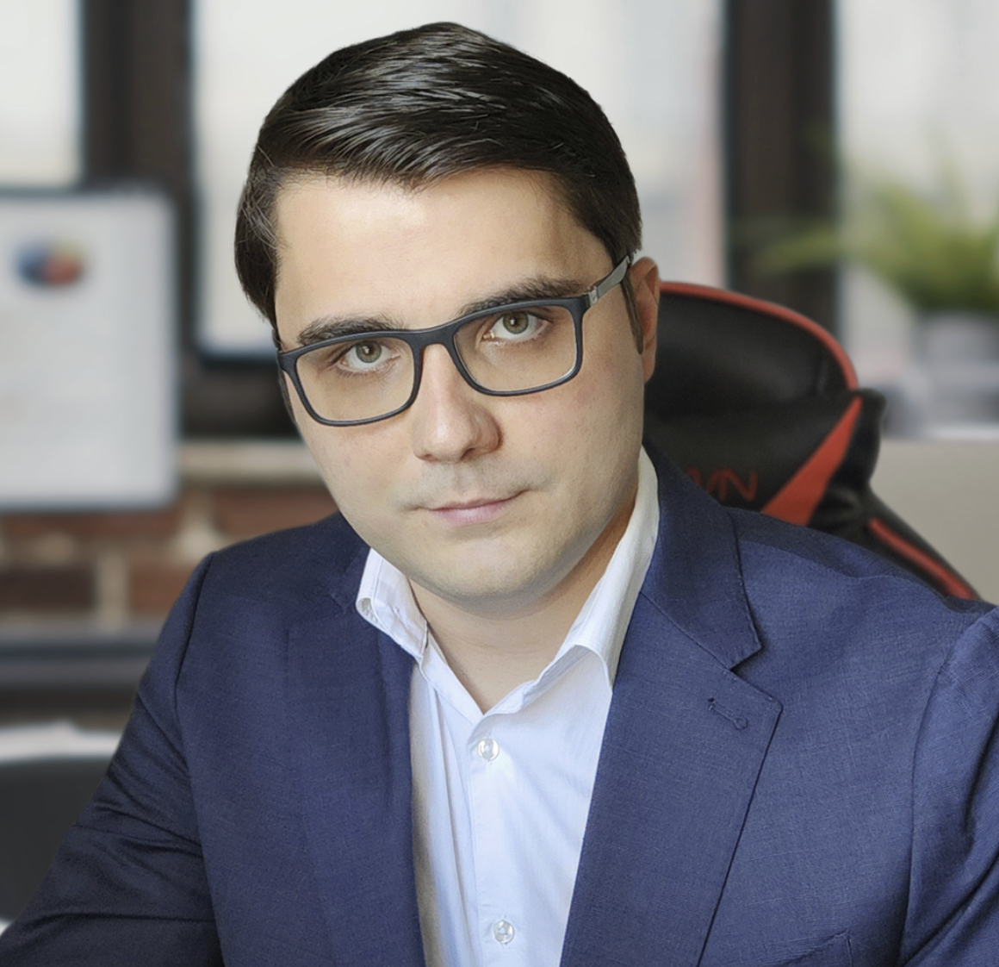

About Neural MS Consulting
At Neural MS Consulting, we are driven by innovation and powered by technology. With a passionate team of experienced engineers, developers, and technology experts, we work relentlessly to provide top-tier software solutions that revolutionize businesses.
Our mission is to deliver cutting-edge technology solutions that enable businesses to automate processes, integrate AI tools, and transform operations for sustainable growth. We believe in the power of technology to create efficiency, improve performance, and unlock new potential.

Artyom Maslow
Co-Founder & CEO
With a decade of experience in software engineering, Artyom has worked at both Fortune 500 companies and innovative startups. Their journey began as a QA tester, where they built a strong foundation in software quality and testing, and continued through the ranks to become a full-stack developer. This diverse experience, ranging from large corporate environments to the agile world of startups, has equipped Artyom with a comprehensive understanding of the software development lifecycle, technology trends, and business needs.
Driven by a passion for innovation, Artyom founded Neural MS Consulting with Vladimir to help businesses harness the power of technology, automate processes, and integrate cutting-edge tools like AI to drive growth and efficiency. Their vision is to create solutions that not only solve today's problems but also position businesses for future success.
Vladimir Shkodin
Co-Founder & CTO
As Chief Technology Officer of Neural MS Consulting, Vladimir brings 20 years of experience in building and managing a diverse range of systems across multiple industries. With a deep expertise in software development, architecture design, and cloud infrastructure, Vladimir plays a critical role in ensuring that innovative, scalable solutions are consistently delivered.
Specializing in leading teams to develop high-performance systems, Vladimir is dedicated to aligning technology with both business objectives and customer needs. Their forward-thinking approach ensures that Neral MS Consulting remains at the cutting edge of technological advancements, helping businesses stay ahead in an ever-evolving digital landscape.